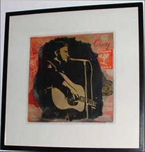
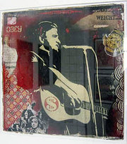
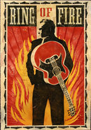

Johnny Cash
From The Giant: The Definitive Obey Giant Site
From Wikipedia:
Johnny Cash (February 26, 1932 – September 12, 2003) was an influential American country music and rock music singer and songwriter and the husband of June Carter Cash.
Cash was known for his deep and distinctive voice, the boom-chick-a-boom or "freight train" sound of his Tennessee Three backing band, and his dark clothing and demeanor, which earned him the nickname "The Man in Black." He started all his concerts with the simple introduction: "Hello, I'm Johnny Cash."
Much of Cash's music, especially that of his later career, echoed themes of sorrow, moral tribulation and redemption. Hits include "I Walk the Line," "Folsom Prison Blues," "Ring of Fire," "Man In Black," and a cover of the Nine Inch Nails song, "Hurt." He also recorded several humorous songs, such as "One Piece at a Time," "The One on the Right Is on the Left," and "A Boy Named Sue;" bouncy numbers, such as "Get Rhythm;" and various train-related songs, such as "The Rock Island Line."
He sold over 50 million albums in his nearly 50 year career and is generally recognized as one of the most important musicians in country music.
In addition to his two posters for the Johnny Cash biopic Walk the Line, Shepard has released several fine art pieces as tribute to the legendary singer.
|  |
 |
 |
{kind=link}
{kind=link}
{kind=link}